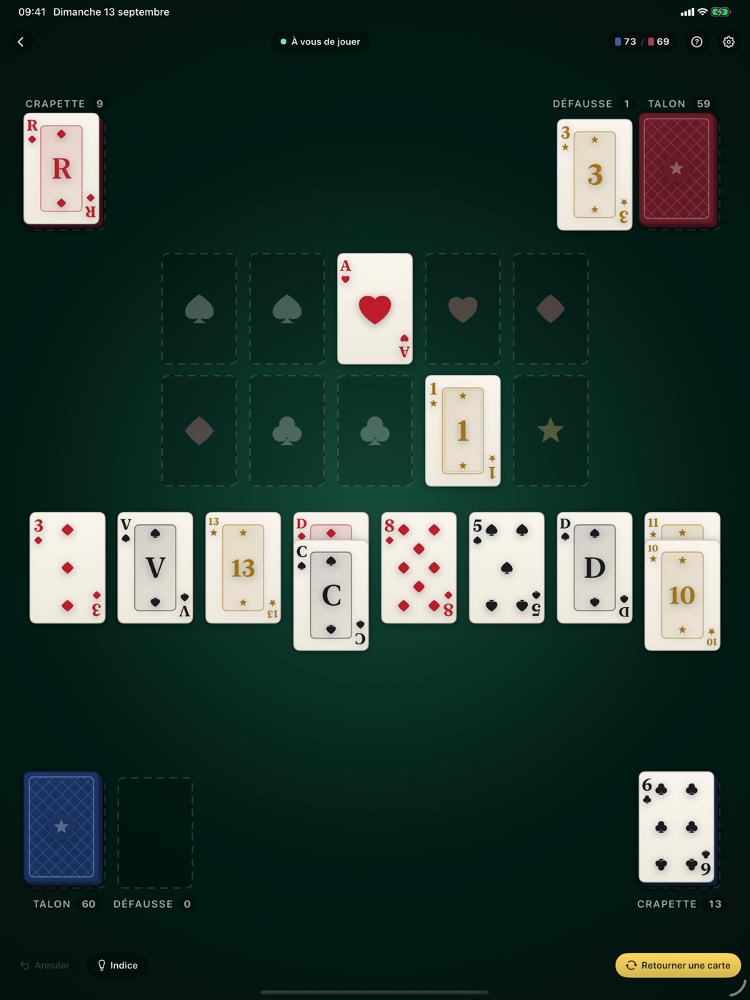

La crapette, pour de vrai
La crapette se joue à deux, chacun avec son jeu. On y gêne l'adversaire autant qu'on se débarrasse de ses propres cartes, et celui qui oublie un coup obligatoire s'entend crier « Crapette ! ». Bobcrapette applique ces règles sans les édulcorer, y compris l'appel : l'adversaire vous surveille, et vous pouvez le prendre en faute.
Au jeu de tarot
77 cartes par joueur : les quatre couleurs de l'As au Roi, Cavalier compris, et les 21 atouts en cinquième famille, avec leurs propres fondations montées de 1 à 21.
Un adversaire qui joue
Trois niveaux. Le débutant bâcle ses tours et vous laisse l'occasion de crier « Crapette ! ». Le niveau fort anticipe, joue offensif et ne rate jamais une de vos fautes.
Une aide discrète
Les destinations possibles s'allument, les coups obligatoires portent un liseré orange, et l'application vous prévient avant une faute. À couper dans les réglages pour jouer sans filet.
Trois variantes
Tarot avec atouts, tarot sans atouts, ou jeu de 52 classique. Crapette de 13 ou 19 cartes. Le moteur de règles s'adapte, rien d'autre ne change.
Rien ne sort de l'appareil
Aucun compte, aucune connexion, aucune publicité, aucun traqueur. Le jeu fonctionne en avion et ne collecte rien du tout.
Une seule application
iPhone, iPad et Mac. Le tapis se replie selon la place : huit colonnes en ligne sur grand écran, sur deux rangs en portrait.
Le tapis sur iPad

Comment on gagne
Le premier qui n'a plus ni crapette, ni talon, ni défausse. Pour y arriver, on monte les fondations du centre, on descend les colonnes en alternant rouge et noir, et surtout on charge la crapette de l'adversaire de toutes les cartes qu'on peut : chacune rallonge son travail d'autant.